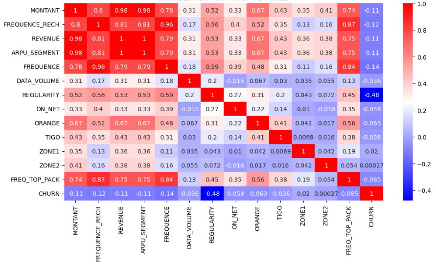

Executive Summary
The Expresso Customer Churn Prediction project is a machine learning initiative developed for Expresso, an African telecommunications company. The primary goal is to predict customer churn, defined as a customer being inactive (no transactions) for 90 days. By identifying "at-risk" customers through behavioral and profile data, the company can deploy proactive retention strategies to mitigate revenue loss and improve customer loyalty. The solution utilizes a Logistic Regression model within a Scikit-learn pipeline to output probability-based risk scores.
Methodology
- Data Acquisition: Used trainhackathon.csv for model training and Testhackathon.csv for churn probability prediction.
- Feature Characterization: Features classified into numerical and categorical.
- Preprocessing: Missing values imputed with SimpleImputer, numerical features scaled using StandardScaler, and categorical variables encoded via OneHotEncoder.
- Model & Validation: Logistic Regression implemented in a Scikit-learn Pipeline and evaluated using cross-validation with Log-Loss scoring.

Feature correlation matrix showing key churn predictors
Findings
Strongest Churn Driver
Strongest negative correlation with churn; reduced usage consistency sharply increases churn risk.
User Activity Effect
Higher recharge and transaction frequency significantly lowers the probability of churn.
Data Usage Impact
Higher data consumption is associated with better retention; data users churn less than voice-only users.
Customer Tenure Insight
Most customers are long-term users, indicating churn is driven by behavioral shifts rather than early drop-off.
.png)
.png)